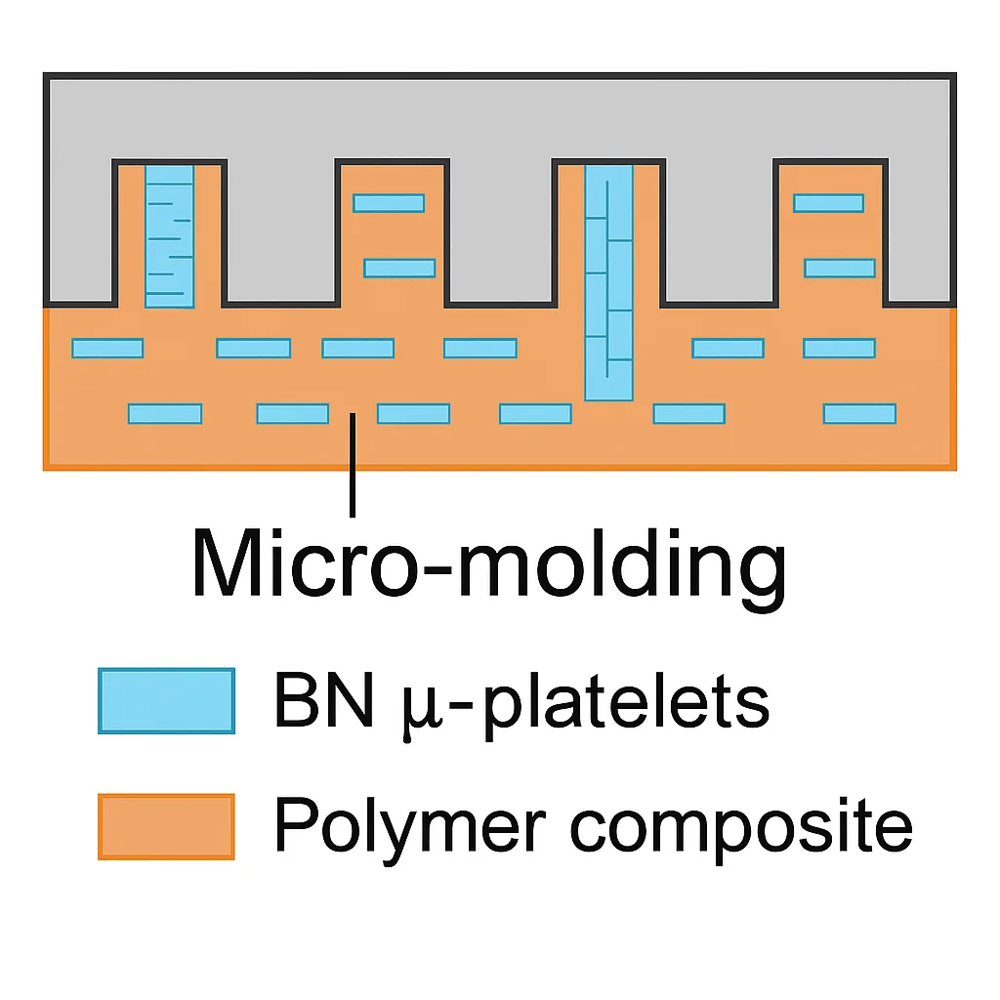

보론 나이트라이드(BN) 입자를 이용해 양방향 열전도성을 가지는 TIM을 만드는 방법 발표
안녕하세요. 오늘 저는 반도체 패키징에서 중요한 역할을 하는 열 인터페이스 재료, TIM에 관한 새로운 연구를 소개해드리겠습니다.
특히, 이 연구에서는 보론 나이트라이드(BN) 입자를 이용해 양방향 열전도성을 가지는 TIM을 만드는 방법이 제안되었습니다.
반도체가 점점 더 작아지고, 여러 층으로 쌓이는 3D 집적 회로가 등장하면서, 발열 문제가 심각해지고 있습니다.
열이 제대로 빠져나가지 않으면 소자의 성능이 떨어지고, 심하면 고장까지 납니다. 그래서 소자와 히트싱크 사이에 들어가는 TIM이 반드시 필요합니다. TIM은 열을 잘 전달하면서도 전기는 통하지 않아야 하고, 기계적으로도 안정적이어야 합니다.
기존의 TIM은 보통 고분자 매트릭스 안에 금속이나 탄소 재료를 넣습니다.
하지만 금속이나 그래핀은 전기를 잘 흘려서 TIM으로 적합하지 않습니다.
대신 보론 나이트라이드(BN) 같은 세라믹은 전기를 차단하면서도 열은 잘 전달합니다.
BN은 판상 구조라 옆으로는 400~600 W/mK, 위아래로는 1~30 W/mK의 열전도성을 가집니다.
문제는 기존 연구들이 BN을 한쪽 방향으로만 정렬시키다 보니, 수직 또는 수평 중 하나만 잘 되는 단방향 열전도성을 가졌다는 점입니다.
그래서 이 연구의 목표는 간단합니다.
BN 입자를 수직과 수평 두 방향으로 동시에 잘 정렬시켜, 열을 양방향으로 효율적으로 전달하는 TIM을 만드는 것입니다.
연구팀은 마이크로 몰딩(micro-molding)이라는 기법을 사용했습니다.
쉽게 말하면, 작은 돌출 구조가 새겨진 몰드 안에 BN과 고분자 용액을 흘려 넣는 방식입니다.
돌출된 기둥 부분에서는 입자가 세로로, 평평한 부분에서는 가로로 정렬되도록 만들었습니다.
이렇게 하면 자연스럽게 BN 입자가 ‘Y자 모양’처럼 방향을 나누어 배열됩니다.
즉, 수직 + 수평 양방향 네트워크가 형성되는 것이죠.
실험 과정은 이렇습니다.
평균 직경 42 μm 크기의 BN 입자를 PUA라는 고분자 용액에 섞습니다. (40 wt.%)
이 혼합물을 PDMS 몰드에 스핀 코팅하고, 진공을 걸어 작은 기둥 패턴을 가득 채웁니다.
자외선을 쬐어 고분자를 굳히고, 몰드를 제거하면 두께 100 μm짜리 얇고 유연한 TIM이 완성됩니다.
SEM(전자현미경)과 EDS 분석으로 BN 입자가 실제로 수직/수평 방향으로 정렬되었음을 확인했습니다.
연구팀은 시뮬레이션과 실험을 통해 최적의 조건을 찾았습니다.
특히, 실린더 돌출의 직경이 100 μm일 때 입자의 정렬과 충진율이 가장 좋았습니다.
이때 수직 열전도율은 6.9 W/mK, 수평 열전도율은 7.4 W/mK로, 기존 TIM보다 훨씬 뛰어난 수치를 기록했습니다.
즉, 어느 방향으로든 열을 잘 전달할 수 있는 TIM이 만들어진 것입니다.
열 성능은 IR 열화상 카메라로 가열 및 냉각 실험을 통해 검증했습니다.
최적 TIM을 사용했을 때, 온도 상승이 가장 느리고 냉각은 가장 빨랐습니다.
예를 들어, 기준 TIM은 87 °C까지 올라갔지만, 최적 TIM은 70 °C에서 안정화되었습니다.
즉, 같은 조건에서 열을 더 효과적으로 빼내고 있다는 의미입니다.
TIM은 기계적으로도 유연해야 실제 반도체 패키징에 적용할 수 있습니다.
BN 입자가 40%나 들어갔지만, 이 TIM은 곡률 반경 1 mm까지도 구부러질 정도로 유연했습니다.
또한, 울퉁불퉁한 표면에도 빈틈 없이 밀착할 수 있었습니다.
이는 패턴 구조 덕분에 스트레스를 분산시키고, 기계적 안정성을 유지할 수 있었기 때문입니다.
연구팀은 TIM과 금속층을 교대로 쌓은 3D 적층 구조 모델을 만들고 열 성능을 테스트했습니다.
심지어 180 °C, 압력 87 kPa 조건에서도 TIM은 녹거나 깨지지 않았습니다.
즉, 고온·고압 환경에서도 안정적으로 동작하며, 실제 반도체 패키징 응용에 적합함을 보여주었습니다.
정리하자면, 이번 연구는
마이크로 몰딩을 활용해 BN 입자를 양방향으로 정렬했고,
이를 통해 수직·수평 양방향 열전도성이 모두 향상된 TIM을 제작했으며,
높은 유연성과 밀착성까지 확보했다는 점에서 큰 의미가 있습니다.
이 TIM은 앞으로 고성능 3D 반도체 패키징과 같이, 열 관리가 필수적인 첨단 전자 장치에 매우 유용하게 적용될 수 있을 것입니다.
이상으로 발표를 마치겠습니다
-------------------------------
논문의 요지
BN의 성질:
BN은 층상 구조라서 옆으로(측방향, in-plane) 열을 아주 잘 전달합니다.
하지만 위아래(수직, through-plane) 방향으로는 열전도성이 훨씬 낮습니다.
기존 연구 한계:
대부분의 연구는 BN 입자를 한쪽 방향(예: 가로만, 혹은 세로만)으로 정렬시켰습니다.
그 결과, 열이 한쪽 방향으로만 잘 흐르는 단방향 TIM밖에 만들 수 없었습니다.
이 논문의 핵심 아이디어:
마이크로 몰딩(micro-molding) 기법을 활용해서,
돌출된 기둥 부분에서는 BN 입자가 수직 정렬
평평한 부분에서는 BN 입자가 수평 정렬
이렇게 해서 BN 입자를 양방향(수평 + 수직)으로 동시에 정렬시켰습니다.
Dp = 42 μm → BN 입자의 지름 (납작한 판의 가로 크기)
hp = 2.1 μm → BN 입자의 두께 (판의 높이)
Dc = 100 μm → 마이크로 몰딩에서 만든 기둥(실린더)의 지름
θ (세타) ≈ 56° → 입자가 평균적으로 56° 정도 기울어져 배열됨
ϕ (파이) ≈ 0.26 → 입자 충진율 (입자가 전체 공간에서 차지하는 비율, 약 26%)

결과:
수직 방향 열전도율: 6.9 W/m·K
수평 방향 열전도율: 7.4 W/m·K
= 두 방향 모두에서 균형 있게 열을 잘 전달하는 TIM 완성